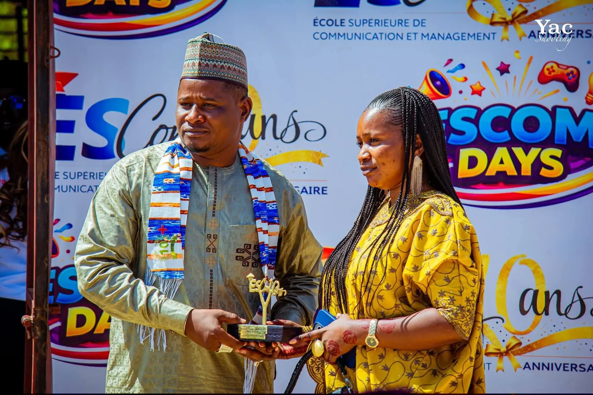
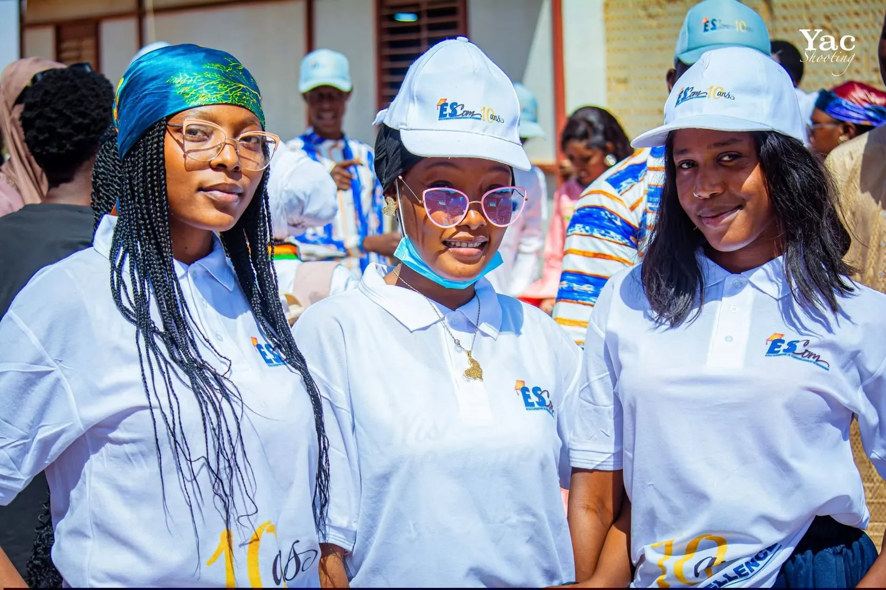

L’École Supérieure de Communication et de Management
« La Garantie d’un Avenir Professionnel ! » Cette signature résume la vocation d’ESCOM : former des jeunes prêts à entrer dans la vie professionnelle.
ESCOM en quelques mots
Une école tournée vers l’avenir professionnel
L’École Supérieure de Communication et de Management forme des jeunes du niveau moyen jusqu’au supérieur aux métiers de la gestion, du commerce, de la communication, du transport et de la technique. Chaque filière part d’une question simple : de quoi l’étudiant aura-t-il besoin le jour où il entrera dans le monde du travail ?
- CompétencesDes savoir-faire concrets, directement utilisables en entreprise.
- ProfessionnalisationDes filières construites autour de métiers identifiés.
- EncadrementUn suivi de proximité par les équipes pédagogiques.
- Insertion professionnelleStages, rapports et soutenances pour préparer l'entrée dans l'emploi.
- Excellence académiqueDes exigences qui se lisent dans les résultats aux examens.
Une offre qui couvre tout le parcours
ESCOM accueille ses étudiants à plusieurs étapes : au niveau moyen pour une première qualification, au baccalauréat technique, puis au niveau supérieur pour se spécialiser dans la communication, la gestion, la finance, les ressources humaines ou la logistique.
- Niveau moyen
- 8
- filières
- Baccalauréat technique
- 2
- filières
- Niveau supérieur
- 13
- filières
Pourquoi ESCOM
Pourquoi choisir ESCOM ?
Formation professionnelle
Des enseignements orientés vers la pratique des métiers.
Encadrement pédagogique
Des équipes qui suivent chaque étudiant tout au long de l’année.
Orientation vers l'emploi
Stages, rapports et soutenances pour préparer l’insertion.
Diversité des formations
Du CAP au niveau supérieur, dans plus de vingt filières.
Environnement académique
Un cadre d’études structuré, propice à la concentration.
Accompagnement des étudiants
Une écoute et un appui, de l’inscription à la soutenance.

Cérémonies et réussites
Célébrer la réussite de nos étudiants
À ESCOM, la fin d’un parcours se vit comme un moment solennel. Rapport en main et en toge, nos étudiants présentent le fruit de leur travail, puis la communauté de l’école se réunit pour le célébrer.
Soutenances
Chaque candidat défend son rapport de stage devant un jury : président, examinateur et rapporteur.
Certifications
Le diplôme vient reconnaître des compétences construites en classe et sur le terrain.
Parcours académiques
Du niveau moyen au supérieur, chaque étape franchie est une réussite partagée.

Une communauté qui avance ensemble
Polo blanc, casquette aux couleurs de l’école : à ESCOM, porter la tenue, c’est appartenir à une promotion qui apprend, travaille et réussit côte à côte.
- Appartenance
- Discipline
- Professionnalisme
- Esprit d'équipe
Votre avenir professionnel commence ici.
Rejoignez ESCOM Niger pour l’année académique 2026–2027.